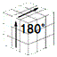
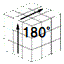

(0)各面中央ポスト固め
白と黄色を対面中央に４個ずつ固め、白を右において、赤、青、橙、緑(勝手に揃う)、と順に固める。
一つ上の面あるいは二つ上の面に跳ね上げて固定する。跳ね上げた波は必ず引き波で戻す。固定したいパーツは行き先で隠れスポットに回転させ保存、引き戻されないように踏ん張る。
３個以上を隠すには、上げ波の線上でさらに上に上がるように置き、引き波で元の位置に戻して、
隠れスポットに保存したパーツと合体させる。
ここでの結合格言は、「単独は横二連作り、縦二連は足突き、肩なら一つ飛ばし突き」。 参考リンク：


(1)白面十字形準備
エッジポストを同色２個ずつペアで固定して、3x3解法に結び付ける。
対象ペアの場所が12箇所と多いため、効率良く２箇所ずつ揃えられるように進めるのがベスト。次の３面配置A,Bとなるように外枠だけを回転させ、次の固定手順にてエッジペアを揃える。
この時点では、２個のエッジの色が揃っていれば、各面の中央色と合っていなくてもよい。


最後の中央エッジは、２箇所互いにクロスペアになり（左図）３面配置にできないことも起こる。


この時、右図のキューブのようにエッジペアに並べるためには、次の手順による。
Rw' F U' R F' U Rw


なお、誤操作によるパターンの破綻を回避する方法として、手数は少し増えるが、
次のルーチン操作も総合的にはスピードアップに結び付く場合がある。
Y X'u'R U R' F R' F' R Uw （A,A'をペア化する方法として常に使える手順）


中央エッジが12箇所揃ったら、3x3の要領で、白面の十字形を揃える。


(2)中段に(相撲の)黄ばんだマワシを作る
慣れてくれば、(2),(3)を省略し、直接(4)へ進むことができる。（いきなりF2L）

(2)「いきなりF2L法」で「マワシ形成」を飛ばし（4）と併合して、（5）へ進む・黄色面の各エッジ４個の一つずつの側面を、中央の色に合わせる。
・エッジの上面色の色を持つ中央側の横エッジの位置に、F回転するために、
一旦上面色とは反対の中央色側へU回転とF回転させ、逆Uと逆F回転で戻す。
F面左回転したいなら U'F'U F、F面右回転なら U F U'F' と回すことになる。
もし隣のコーナーがIT結合の状態であれば、通常のスロットインを実施する。
なお、逆Uの回転を省略することで手数を縮められるが、隣のコーナー
パーツが同じ色組を含む場合は、この手順にしないとループするため、
判断で躓くよりも、この統一の手順を推奨している。
非常に運の悪いケースで、黄色面のコーナーに白を含んだものがなければ、
下層の白キューブを跳ね上げる。
(4)のコーナーお告げにうまく従い、並行しながらこのステップを実施する
ことで、白の跳ね上げをなくすることが出来る。エッジのお告げは無視してよい。

(3)中段マワシの黄ばみを取る
マワシが中央色に揃ったら、今後１個でも切れ次第、早めに修復する！
・上面奥のエッジ部に、上面が手前色であるエッジピースを横回転する。・上面奥のピース側面の色が「迎え色」のお告げなので、その中央色の
面の手前にあるエッジピースをあげ、ピース横回転で迎え色ピースに
置き換え、縦回転で中段手前に戻す。４エッジピース共に実施する。

(4)マワシの足となる上段のコーナーピースを、下段に４個移動する
白が横を向いたコーナーピースを対象にして、４回作業を進める。
上層奥側で、原則、エッジのお告げがコーナーのお告げに優先する。
最下段、中段の完成を確認する。
・中段のマワシが切れている場合は、３)の要領でマワシを修復する。・コーナーピースの上面が「手前色」なので、そのコーナーピースを
上面奥（左右）に横回転する。左・右の決定は、コーナーピース側面
「迎え色」のお告げが中央キューブ色に近い側（迎える面）へ回す。
「手前色」が横を向いている場合は、一旦、上面への移動になるが、
後述する横向きの場合の臨時対応を使うと、一気に手数が縮む。
・迎える面を縦回転して、手前のエッジキューブを上段に移動する。
・迎えた主体のコーナーピースが下に隠れたので、エッジキューブを
奥に横回転させ待機する（手前横向きの臨時対応では、横回転は正面に）。
・隠れたコーナーピースを下段から戻すと、２個連の強力な群になる
ので、思い切り良く180°横回転させる。
・この横回転は勢いが過ぎた感じなので、迎える面を白エッジが手前
になるよう縦回転させ、群の行き過ぎを横回転で90°戻して、
迎える面の白エッジが手前から下層に移動するように縦回転する。
・慣れてくれば、180°でなく90°で迎え面に止め、そのまま正面に倒すと、
迎え面の戻し縦回転だけで終わらせることができ、スムーズになる。
この迎え面の戻しの時、正面を90°回して保護し、事後に逆回転で戻す。
正面の戻しのとき、白を含むコーナーピースが沈むなら、先に横回転
して上層に残すことができ、１ターン増を上回る効率が得られる。
・上面の横向き白のコーナーピースがない時は下段を点検し、見つかれ
ば縦回転・横180°回転・縦逆回転で戻す。
・中段のマワシが切れるので、３)の要領でマワシを修復する。
・４）の先頭から始める。
・白上向きのコーナーピースだけが残ったら、次の作業を実施する。
・迎え先スロットの上に横回転後上向き縦回転で白横向きに倒し、
倒れたピースを、更に横回転でスロットの位置の下層に移動させる。
・中段のマワシが切れるので、３)の要領でマワシを修復する。
＜Rで倒す場合の事例＞セクシームーブという手順を３回実施
 →
→  →
→  →
→ 
→
→
→
→ →
→
→ ・４）の先頭から始める。
(5)パリティ検査後コーナー交換
４コーナーの位置を確定させる。（４x４パリティ補正あり）
4x4で黄色面の黄色エッジペアが偶数箇所なら、そのまま3x3手順へ突入。
奇数箇所だったとき(OLLパリティと呼ばれる)は、事前に 次の補正が必要となる。(Rw,U2),X,(Rw,U2),(Rw,U2),(Rw',U2),X',(Rw,U2),(Rw',U2),(Rw,U2),(Rw',U2),Rw'
アゲ・アーゲ・アゲアゲ
サゲ・サーゲ・アゲサゲ
アゲサゲ・最後サゲ
トン， トントンタン， トンタントンタン， タ


 慎重に回転させ、終了後の偶数箇所達成を確認する。
慎重に回転させ、終了後の偶数箇所達成を確認する。なお、この手順は、次の１５手(OLLパリティ補正と同じ)でも可能である。
"r2 B2 U2 l U2 r' U2 r U2 F2 r F2 l' B2 r2"
右２奥２☆、左下☆右下☆右上☆、前２右上,前２左上、奥２右２（左右はW輪,☆は上２）
ミッツオツウツ、ヒザウツ,ミサウツ,ミアウッツ、マツミア,マツヒア、オツミッツ
同色の面を持つコーナーポスト二つが１辺にあれば、その色の面に回転させ、隣接交換となる。
隣接交換パーム８割、対角交換パーム１割、上層４コーナーの位置確定。無操作も有り
(6)魚型十字作成（＜3x3解法の手段(3)＞と基本的には同じ）
４コーナーの位置確定後、黄色面の形に沿って回転を進める。（横棒・３時６時では時刻読みパーム→、その後黄十字パーム⇒で魚型）
黄十字パーム⇒には、開始位置によって、
・左廻し専用の「肩からパーム（十字横・蝶・亀手前）」と
・左廻し専用の「腰からパーム（亀手開）」と
・最終段階の左右廻しの「黄混血パーム」がある。
↓ ↓ ↓
点→横棒→３時→６時→十字（コーナー交換）⇒魚型十字
↓→→→↑↓→亀・蝶・十字 ⇒魚型十字
↓ ↓
点→横棒→３時⇒黄色一面
黄色一面になったとき、黄十字パームで魚型に戻した方が早い。
ほとんどの場合が、次の３コースの時刻読みパーム後、黄十字パームとなる。
・点ー棒ー三ー六（または、対角交換パーム省略ー棒ー三ー六）
・棒ー六
・三ー六


⇩の矢印位置から、黄十字パーム左右を１発仕掛ける。
上段側面３個に黄色を含まない面(A)の対面(B)から、黄十字パーム回転を
１回実施して、全面黄色にする。一気にゴールとなる場合もある。
黄十字パーム（左手）:LUL’ULU2L’ 左廻し（Xp-a）
（右手）R’U’RU’R’U2 R 右廻し (Xp-b)
 →
→
→
→  →
→
→
→
→
→  →
→
→
→
→
→
→
→
→
→
→
→  →
→


矢印の位置から右廻し 矢印の位置から左廻し
(7)上層の側面の色をお迎え手順でゴールする
・全面黄色の側面は、次の「お迎え」パターンのいずれかを告げているので、
それぞれの対応回転を使ってゴールする
１）奥側に３個同色の列を置いて、手前に対し左迎えか右迎え右迎え、左迎えのお迎えパーム （U パーム）
２）４個のエッジの十字交換 （H パーム）
３）４個のエッジに対し、手前と左側および奥側と右側の２個ずつの交換
斜め２組交換 （Z パーム）
この代わりに、左迎えと右迎えを順番に実施してもよい。
・ゴールを確認する
なお、4x4のキューブの場合は、エッジA'とエッジB'が入れ替わったケースが
５割ほど存在する。PLLパリティ発生と呼ばれる。
その時には、次の手順で、C’と対面するエッジ２個とを交換する必要がある。交換したいC’と対面とを縦にしてフロントにおき、
l2,U2,F2,l2,F2,U2,l2 （１８０°でルーフルフールと覚える）を廻す。


 →
→  →
→  →
→  →
→  → 
→
→ 
→ 
 →
→  →
→